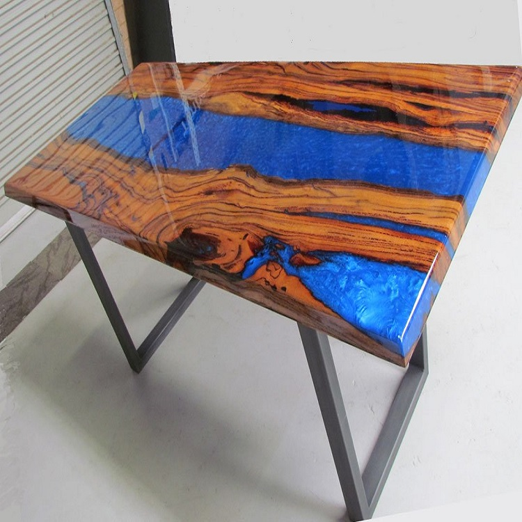
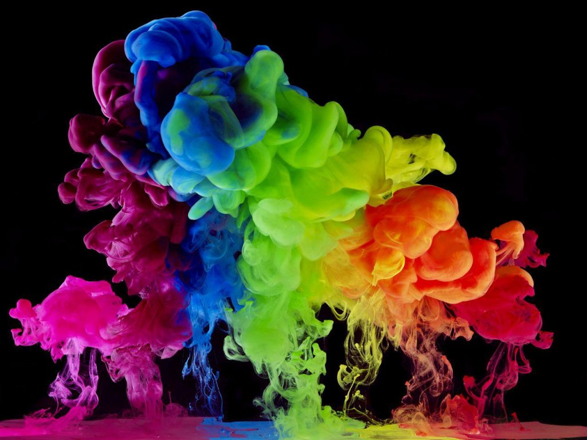

فروشگاه رزین

!!آنچه درباره ی رزین باید بدانید
.رزین اپوکسی از خانواده رزینهای دو جزیی است که شامل “پایه ی رزینی” و “هاردنر” میباشد
.این دو جزء باید به نسبت مشخص بنا به فرمولاسیون و کاربرد آن متفاوت است
.که امروزه در صنایع مختلف و به خصوص صنعت چوب با روشهای مختلف مورد استفاده قرار می گیرد
یکی از زیر شاخههای کاربرد رزین اپوکسی، استفاده از آن در صنایع تزئیناتی و دکوراسیون چوبی است؛
.که رزین اپوکسی مخصوص چوب در کشور ما نیز مورد استقبال هنرمندان و علاقهمندان به چوب قرار گرفته است
انواع رزین
رزین اپوکسی;
.رزین اپوکسی موادی دو جزئی متشکل از رزین اپوکسی و سخت شونده ی هاردنر می باشد
.رزین های اپوکسی کارایی های بالایی دارد که بطور گسترده در تقویت، ترمیم و مقاوم سازی انواع سازه ها به خصوص در تولید محصولات کامپوزیتی مورد استفاده قرار می گیرد
رزین پلیاستر
.زینهای پلی استر غیر اشباع بطور گسترده در سراسر دنیا استفاده می شوند
.زنجیر اصلی پلیمری این رزین دارای اتصالات استری میباشد که از واکنش تراکمی یک ترکیب الکلی چند عاملی و یک اسید چند عاملی مانند گلیکول و اسید فوماریک تهیه میشود
.لی استر غیر اشباع با استایرن مخلوط میشود و میتواند از طریق پیوندهای دوگانه موجود در هر دو جزء، شبکهای شود
CCR رزین اپوکسی چوب
.رزین اپوکسی را شامل میشود. A است که بخش Clear Casting Resin مخفف CCR
.این رزین بعد از خشک شدن کاملاً شفاف و بی رنگ بوده و به هیچ عنوان زرد نمیشود
.و کاربرد آن فقط برای کارهای ریخته گری و قالب ریزی رزین است که در این مورد استفاده رزین به صورت حجمی و با ضخامت بالا ریخته میشود.
انواع رنگ های سازگار با رزین

رنگ های سازگار با رزین شامل :
1.رنگ های پودری [پیگمنت]
2.رنگ های جوهری شفاف {ترنسپرنت}
3.رنگ های خمیری
4.رنگ های میکروبی
درباره ی ما
از تمامی دوستان که ما رو قابل دونستن و به ما اعتماد کردن بسیار سپاس گذار هستیم.
تیم ما از سال 1400 شروع به فعالیت کرد ومشتاق استقبال شما عزیزان می باشد
ارتباط با ما
- می توانید با شماره های ذیل تماس حاصل فرمایید
- شماره تماس : 09398739629
- شماره تماس : 09381722526
- آیدی اینستاگرام : zhikan_art_gallery
© mahdi